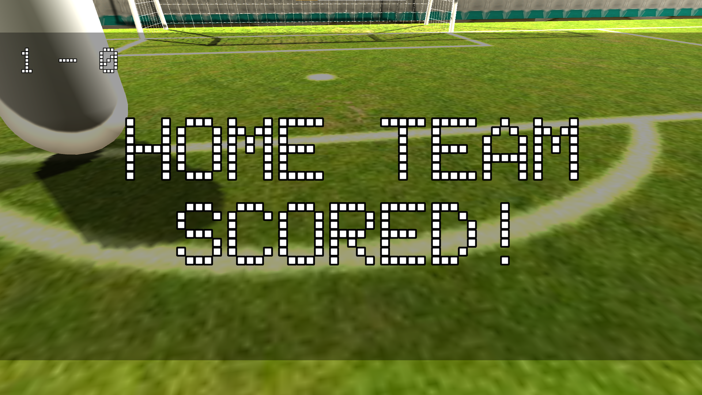
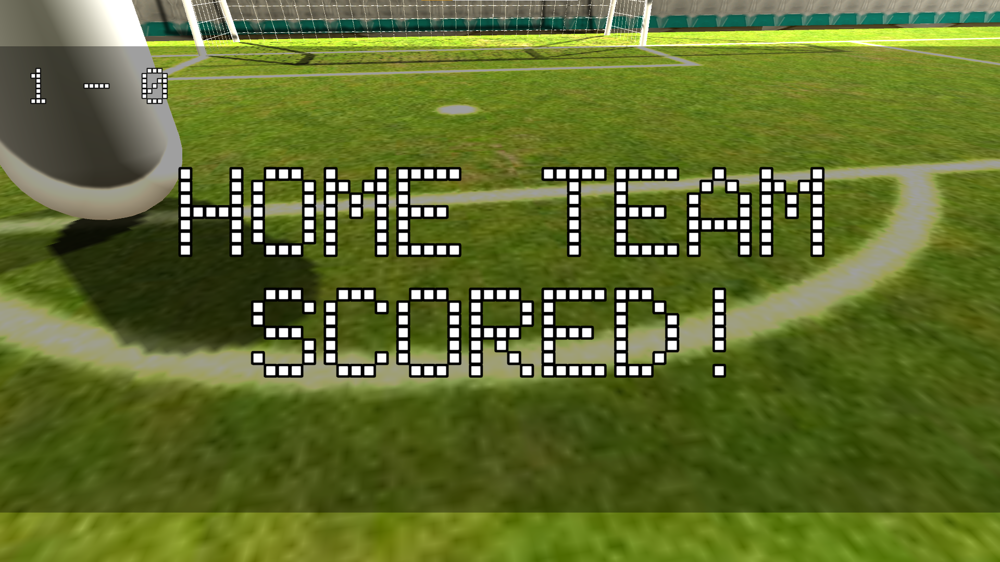

First-person Football
For the course Programming 9, I developed a first-person football game in Unity using C#. The goal of the game is simple but competitive: you must score 10 goals before the AI opponent does. The match becomes a fast and frantic race to reach the score limit first. Despite the limited development timeframe of just one and a half weeks, the game includes a fully functional AI opponent, scoring system, and responsive first-person controls -resulting in an engaging and replayable prototype.
 

Project Context
This project was part of the Programming 9 course, where the challange was to create a complete playable Unity game under strict time pressure. The objective was to demonstrate programming proficiency, apply game-loop logic, and integrate gameplay systems in a short development sprint. This resulted in a compact but fully working first-person football experience.
My Role
I created the entire game independently, including the first-person movement system, ball physics, scoring mechanics, and AI behavior. I implemented all gameplay logic in C#, built the environment in Unity, and ensured that the game was functional, enjoyable, and aligned with the project requirements -all within a tight deadline.